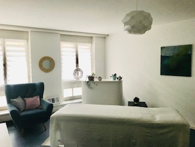

Über mich – Miriam Pimputkar
Mein Name ist Miriam Pimputkar. In meiner Praxis in Winterthur schaffe ich einen geschützten Raum für Entspannung und Gesundheit. Mit Achtsamkeit, Fachwissen und Leidenschaft begleite ich dich auf deinem Weg zu mehr Wohlbefinden und Vitalität.

Therapeutische Ausbildung
Polaritytherapeutin i. A.
- Authentische Kommunikation
- Prozessbegleitung
- Embryologie
- Reflexologie
- Cranio
- Lymphbehandlung
- Yoga-/Körperübungen
- Ernährungslehre
Berufsmasseurin
- Klassische Massage
- Bindegewebsmassage
- Myofasziale Triggerpunktbehandlung
- Schröpfkopfmassage
- Hawaiianische Wellnessmassage
Ergotherapie
- Grundjahr
- Praktikum (Suchtklinik)
Kurse
- Formatives Embodiment
- IBP-Workshops (Achtsamkeit, Selbstfürsorge, Mein Raum – Dein Raum: Grenzen setzen)
- Geburtsworkshops
- Impact (Selbstverteidigung)
- Continuum
- Energetisches Heilen
- Meridian Scanning (TCM)
Erlebte Therapien
Körperpsychotherapie (IBP), Traumatherapie
- SE (Somatic Experiencing)
- EMI (Eye-Movement-Integration)
- Lifespan-Integration
- Prä- und Perinatale (Geburts-)Therapie
Physiotherapie
- Klassische Körperübungen (Kraft, Stabilisierung)
- Medizinische Trainingstherapie (MTT)
- Faszienbehandlung
- Myoreflextherapie
- Elektrotherapie
- Dry Needling
- Orthopädie
- FOI (Funktionelle Orthonomie & Integration)
- Spiraldynamik
- Ergotherapie
Komplementärtherapien
- Bewegungstherapie
- Kinesiologie
- Craniosacraltherapie
- TCM
- Watsu
- Alexandertechnik
- Trager
- Musiktherapie
- Mal- und Gestaltungstherapie
- Polarity
Beruflicher Hintergrund
- Primar- und Schwimmlehrerin
- Lerncoach für Kinder und Erwachsene
- Coach für verhaltensauffällige Kinder
Das bin ich: ein fröhliches, bewegungsfreudiges Wesen mit einer grossen Faszination für den menschlichen Körper. Ich liebe es, mit meinen Händen zu arbeiten und mit Menschen in Kontakt zu sein.
Gesund und körperlich frei zu sein, ist keine Selbstverständlichkeit. So praktiziere ich regelmässig eine Mischung aus Pilates, Yoga, Faszientraining, Qi Gong, Meditation und vieles mehr. Was meinem Körper und meiner Seele nicht fehlen darf, ist das Tanzen zu den 5 Rhythmen.
Meine Lebenserfahrungen haben zu einem grossen Interesse an der Heilung des menschlichen Körpers und somit zu einem reichhaltigen therapeutischen Erfahrungsschatz geführt – und dies wiederum zu meiner jetzigen Herzensarbeit als Masseurin und Körpertherapeutin. Es bereichert mich sehr, Menschen etwas Gutes zu tun, sei es im Rahmen einer Massagebehandlung oder im gemeinsamen Erforschen und zur Verfügung stellen, was es braucht, damit der Körper sich mit seinen Leiden beruhigen kann.
Neugierig geworden? Dann melde dich jetzt für eine Kennenlernmassage an!
Kennenlernmassage buchenWas meine Arbeit ausmacht
Achtsam
Aufgrund meiner Feinfühligkeit arbeite ich sehr achtsam mit meinen Händen. So erhältst du eine individuell auf dich abgestimmte Massage.
Wohltuend
Während der Massage arbeite ich in der Stille oder zu sanfter Musik, voll und ganz auf dich fokussiert. Durch das Nichtsprechen nimmst du deinen Körper und die wohltuenden Berührungen intensiver wahr.
Ganzheitlich
Du profitierst von meinen reichhaltigen Erfahrungen und Wissen aus der Physio- und Ergotherapie, TCM und Kinesiologie. Bei Interesse zeige ich dir Übungen, die dir im Alltag helfen, selber Stress, Anspannung und Schmerzen zu reduzieren.
Sozial
Falls du nicht- oder wenigverdienend bist, bin ich gerne bereit, dir finanziell entgegenzukommen. Melde dich ungeniert per E-Mail bei mir. mirismassage@gmail.com
Neugierig geworden?
Dann melde dich jetzt für eine Kennenlernmassage an! Ich freue mich auf dich! Bis bald!
Termin buchen